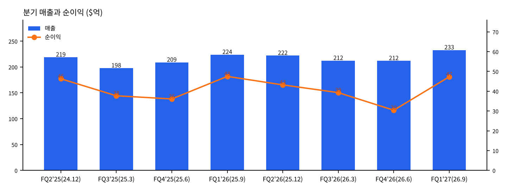
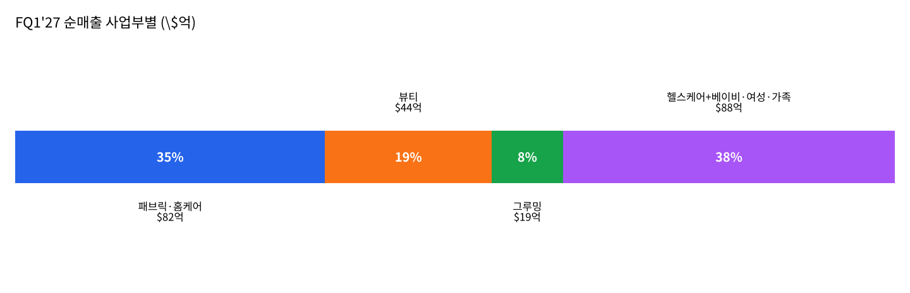
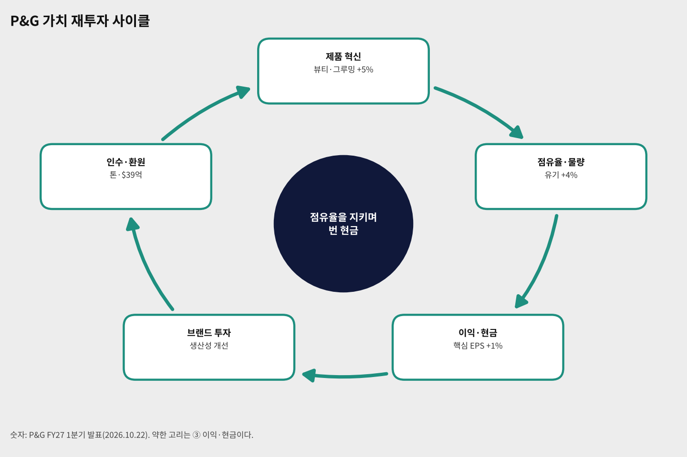

P&G는 타이드·페브리즈·팸퍼스·질레트·올레이 등을 파는 생활용품 대기업이다. 1분기에 유기 매출 +4%를 기록했고 미국 대형 유통 고객 중 70% 이상이 점유율을 유지하거나 늘리고 있다고 설명했다.
| 항목 | 내용 |
|---|---|
| 종목 | Procter & Gamble (PG) · NYSE · 소비재(생활용품) · 오하이오 신시내티 |
| 멀티플 | PER·P/S는 08·09 항목 표 참조(2026.11.19 종가 기준) |
| 최근 분기(FQ1'27) | 순매출 $233억(+4%), 핵심 EPS $2.00(+1%) |
| 가이던스(FY27) | 전체 매출 +2~4%, 유기 매출 +1~3%, EPS $6.69~6.95(+1~5%) |
| 직원 수 | 약 104,000명(트레이딩뷰) |
| 직책 | 인물 | 역할·특징 |
|---|---|---|
| 회장·CEO | 샤일레시 자이쿠마르(Shailesh Jejurikar) | '통합 전략'의 실행 강화를 언급 |
| CFO | 안드레 슐텐(Andre Schulten) | 생산성 개선이 원자재·에너지·운송비 상승을 상쇄한다고 설명 |
경영 스타일: '소비자 우선 + 생산성'. 초우량 제품을 합리적 가격에 제공하는 전략을 유지하면서 생산성으로 비용 상승을 흡수한다고 밝혔다. 톤(건강보조식품) 인수를 10월 1일 마쳤고 독립 운영한다.
팸퍼스 아모이라 등 혁신 제품이 미국 첫해 약 $1억 매출을 향하고 있다고 보도됐다.
전 카테고리·지역에서 유기 성장을 이어가며 글로벌 점유율은 전년과 같은 수준이다.
다음 실적발표는 세 가지 질문에 답하는 자리다.
1. 물량 중심 성장이 계속되나?
2. 원자재·운송비 상승이 마진을 깎나?
3. 톤 인수가 매출·이익에 기여하나?
한 줄 판정 규칙: 첫 질문(물량 성장)이 유지되고 둘째 질문(마진 방어)이 확인되면 약한 고리(마진 압력)가 풀린다.
일정: FQ2'27(10~12월) 실적 발표는 2027.01.20로 트레이딩뷰에 표시(확인 필요). 회사는 2026.11.19 투자자의 날을 예고했다.
| 분기 | 매출 | 순이익 | EPS | 조정 EPS | 특이 사항 |
|---|---|---|---|---|---|
| FQ2'25(24.12) | $218.8억 | $46.3억 | 1.88 | 1.88 | |
| FQ3'25(25.3) | $197.8억 | $37.7억 | 1.54 | 1.54 | |
| FQ4'25(25.6) | $208.9억 | $36.1억 | 1.48 | 1.48 | |
| FQ1'26(25.9) | $223.9억 | $47.5억 | 1.95 | 1.99 | |
| FQ2'26(25.12) | $222.1억 | $43.2억 | 1.78 | 1.88 | |
| FQ3'26(26.3) | $212.3억 | $39.3억 | 1.63 | 1.59 | |
| FQ4'26(26.6) | $212.0억 | $30.4억 | 1.26 | 1.43 | |
| FQ1'27(26.9) | $232.8억 | $47.3억 | 1.97 | 2.00 |
FQ1'27 순매출 $233억(+4%), GAAP EPS $1.97(+1%), 핵심(Core) EPS $2.00(+1%)(회사 발표, 2026.10.22). 매출·순이익·EPS(GAAP 희석)는 트레이딩뷰 스캐너, 조정 EPS는 트레이딩뷰 실적 페이지의 Reported 값이다. 분기 정렬은 오래된 분기→최신이다.

흐름 요약: 최근 분기 매출은 $232.8억로 전년 동기 $223.9억 대비 +4.0%, 순이익은 $47.3억(전년 $47.5억)다. 최근 4분기 GAAP EPS는 $6.64, 조정 EPS는 $6.90다.
| 사업부 | 내용 | FQ1'27 순매출 | 비고 |
|---|---|---|---|
| 패브릭·홈케어 | 세탁·가정용 세제 | $82.1억 | 유기 +4.8% |
| 뷰티 | 스킨·헤어케어(올레이·SK-II) | $44.1억 | 순매출 +6%, 유기 +5% |
| 그루밍 | 면도기(질레트) | $18.9억 | 유기 +4.5% |
| 헬스케어 + 베이비·여성·가족(합산) | 구강·건강, 기저귀·여성용품·종이 | 약 $87.9억 | 내 계산(총액 − 위 3개 사업부) |

패브릭·홈케어가 순매출의 약 35%(내 계산)로 가장 크고, 뷰티가 가장 빠르게 성장했다. 헬스케어와 베이비·여성·가족은 개별 수치를 확인하지 못해 합산했다.
P&G는 '초우량 제품을 합리적 가치로 소비자에게 제공해 지속 성장과 주주 가치를 만드는 것'을 목표로 한다.
| 축 | 내용 |
|---|---|
| 성장 | 10개 카테고리·6개 지역 모두 유기 성장, 점유율 평탄 |
| 인수 | 톤(Thorne) 10월 1일 편입, 독립 운영 |
| 환원 | 분기 $39억 환원, 연 $150억 계획 |

| 이동평균 | 값 | 종가 대비 | 위치 |
|---|---|---|---|
| 5일선 | $170.57 | -0.2% | 종가 아래 |
| 20일선 | $165.46 | +2.9% | 종가 위 |
| 50일선 | $155.87 | +9.3% | 종가 위 |
| 100일선 | $151.20 | +12.6% | 종가 위 |
| 200일선 | $150.15 | +13.4% | 종가 위 |
52주 고가 $173.59(2026-11-17)·저가 $137.62(2026-01-07) 범위에서 종가 $170.29는 20일선, 50일선, 100일선, 200일선을 웃돌고 5일선은 밑돈다.
| 규칙 | 기준 | 현재 값 | 신호 |
|---|---|---|---|
| 장기 추세 필터 | 종가 vs 200일선 | $170.29 > $150.15 | 매수 |
| 중장기 교차 | 50일선 vs 200일선 | $155.87 > $150.15 | 매수 |
| 단기 교차 | 20일선 vs 50일선 | $165.46 > $155.87 | 매수 |
| 돈키언 채널 | 55일 고가 $173.59 / 저가 $141.86 | 중간값 $157.73 위 | 매수 |
| 1개월 모멘텀 | 21거래일 수익률 | +6.9% (기준 $159.32) | 매수 |
| 3개월 모멘텀 | 63거래일 수익률 | +19.1% (기준 $142.97) | 매수 |
| 6개월 모멘텀 | 126거래일 수익률 | +19.6% (기준 $142.44) | 매수 |
| 12개월 모멘텀 | 252거래일 수익률 | +16.8% (기준 $145.82) | 매수 |
| 종합 (8개 평균) | +1.00 | 강한 매수 |
해석: 매수 신호 8개(장기 추세 필터, 중장기 교차, 단기 교차, 돈키언 채널, 1개월 모멘텀, 3개월 모멘텀, 6개월 모멘텀, 12개월 모멘텀), 매도 신호 0개(없음). CTA 점수 +1.00(강한 매수). 14일 ATR $3.43 (2.0%), 52주 고가 $173.59 · 저가 $137.62.
| 가격 | 기준 | 무엇이 바뀌나 |
|---|---|---|
| $173.59 | 55일 고가 | 돌파 시 채널 상단 갱신 |
| $159.32 | 1개월 모멘텀 기준가 | 종가가 이 가격 위면 1개월 신호 매수 |
| $157.73 | 돈키언 중간값 | 55일 채널 중간값 위/아래로 신호가 바뀜 |
| $150.15 | 200일선 | 종가가 이 선 위/아래인지로 장기 추세 신호가 바뀜 |
| $145.82 | 12개월 모멘텀 기준가 | 종가가 이 가격 위면 12개월 신호 매수 |
| $142.97 | 3개월 모멘텀 기준가 | 종가가 이 가격 위면 3개월 신호 매수 |
| $142.44 | 6개월 모멘텀 기준가 | 종가가 이 가격 위면 6개월 신호 매수 |
| $141.86 | 55일 저가 | 이탈 시 채널 하단 갱신 |
가격 수준은 신호가 바뀌는 기준선일 뿐 진입·청산 가격 제안이 아니다. 20일/50일 교차는 이동평균 자체가 움직여 단일 가격으로 표시하지 않았다. 일봉·주봉은 종가 기준 직접 계산(고저 데이터 미사용)이다.
| 악재 요인 | 내용 | 강도 |
|---|---|---|
| 원자재·에너지·운송비 | 마진 압력, 생산성으로 상쇄 중 | 중간 |
| 성장 둔화 | GAAP EPS 성장 +1%로 낮은 편(핵심 +1%) | 중간 |
| 지정학·경제 불확실성 | CEO가 지속적인 도전을 언급 | 중간 |
| 점유율 평탄 | 글로벌 점유율 전년과 같음 | 참고 |
| 티커 | 회사 | PER(TTM) | PEG | P/S | EPS 성장(YoY) |
|---|---|---|---|---|---|
| PG | 프록터앤갬블 | 25.6배 | – | 4.49배 | -3% |
| KO | 코카콜라 | 28.9배 | 2.37 | 8.28배 | +12% |
| PEP | 펩시코 | 17.8배 | 0.35 | 1.98배 | +51% |
| CL | 콜게이트 | 38.6배 | – | 3.74배 | -28% |
| KMB | 킴벌리클라크 | 10.8배 | 0.16 | 2.18배 | +68% |
비교 결론: P&G PER은 코카콜라·콜게이트 사이 구간이다. TTM EPS가 감소(-3%)해 PEG는 산출 불가다.
P&G는 영업현금흐름으로 배당과 자사주 매입을 모두 감당하고 있다(분기 $39억 환원).
| 지표 | 값 | 출처 | 해석 |
|---|---|---|---|
| 현금·단기투자 | $154억 | 트레이딩뷰 스캐너(최근 분기) | |
| 총부채 | $389억 | 트레이딩뷰 스캐너(최근 분기) | |
| 순부채(부채−현금) | $235억 | 내 계산 | 현금 대비 부채 부담 |
| 잉여현금흐름(TTM) | $153억 | 트레이딩뷰 스캐너 | |
| TTM 매출 | $879억 | 트레이딩뷰 스캐너 |
| 기준 | 매출 | P/S | 비고 |
|---|---|---|---|
| 내 계산(종가 ÷ 최근 4분기 매출 합계) | $879.2억 | 4.49배 | 시총은 정렬용 데이터에서만 사용 |
| 동종(트레이딩뷰) | – | KO 8.28배 · PEP 1.98배 · CL 3.74배 · KMB 2.18배 | 11.19 |
해석: P/S 4.70배는 코카콜라(8.28배)보다 낮고 콜게이트(3.74배)보다 높다(트레이딩뷰 11.19).
EBITDA는 영업활동의 현금 창출력을 보는 지표이고, PEG는 PER을 EPS 성장률로 나눈 값이다. EBITDA·FCF는 트레이딩뷰 TTM 값이다.
| 지표 | 값 | 산출 |
|---|---|---|
| EBITDA(TTM) | $240억 | 트레이딩뷰 스캐너 |
| EBITDA 마진 | 27.3% | EBITDA ÷ TTM 매출(내 계산) |
| FCF 마진 | 17.4% | FCF ÷ TTM 매출(내 계산) |
| PER(GAAP TTM) | 25.6배 | $170.29 ÷ $6.64 |
| PER(조정 TTM) | 24.7배 | $170.29 ÷ $6.90 |
| 방식 | PER | EPS 성장률 | PEG | 판정 |
|---|---|---|---|---|
| GAAP EPS (TTM $6.64) | 25.6배 | -3% ($6.85 → $6.64) | 산출 불가 | 참고 |
| 조정 EPS (TTM $6.90) | 24.7배 | +0% ($6.89 → $6.90) | 170.04 | 기준 초과 |
판정: GAAP EPS 기준 PEG 산출 불가(EPS 성장 -3% 또는 음수) PEG 기준은 1.0 이하 투자 적격, 0.5 이하 적극 매수다. EPS 성장률은 최근 4분기 EPS 합계를 직전 4분기 합계와 비교한 값(내 계산)이고, 일회성 항목이 있으면 조정 EPS 행을 함께 본다.

P&G의 사이클은 제품 혁신 → 점유율·물량 → 이익·현금 → 브랜드 투자 → 인수·환원이다.
| 고리 | 현재 숫자 | 고리 강도 | 약해지는 신호 |
|---|---|---|---|
| ① 제품 혁신 | 뷰티 +5%, 그루밍 +5% 유기 성장 | 강함 | 혁신 둔화 |
| ② 점유율·물량 | 유기 +4%, 물량 +2% | 강함 | 점유율 평탄 |
| ③ 이익·현금 | 핵심 EPS $2.00(+1%) | 보통 | 원가 상승 |
| ④ 브랜드 투자 | 생산성으로 투자 여력 확보 | 보통 | 비용 압력 |
| ⑤ 인수·환원 | 톤 인수, 분기 $39억 환원 | 강함 | 환원 부담 |
사이클의 특징: 가장 약한 곳은 ③ 이익·현금이다. 유기 매출은 +4%인데 EPS는 +1%라 원가 상승이 이익으로 잘 번역되지 않는다.